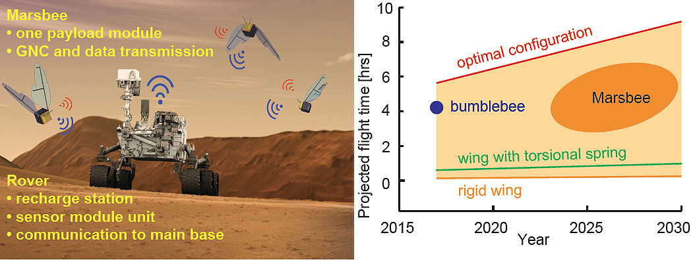
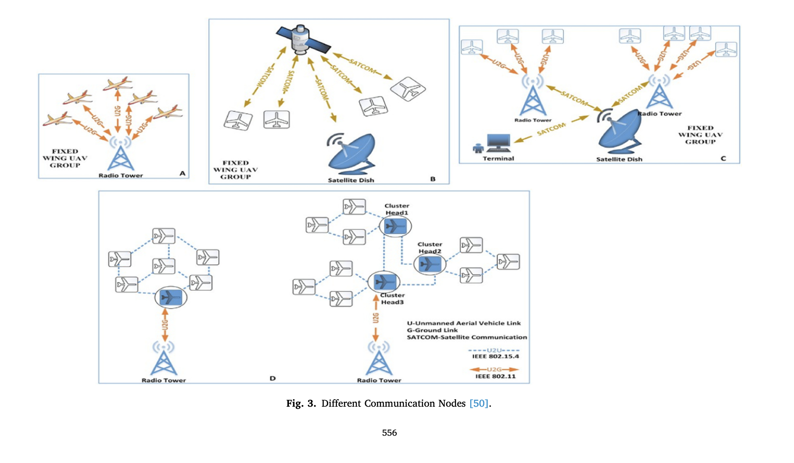

Raphael De Los Reyes • Zaid Soomro • Eric Creasy • David Kuang
The exploration and mapping of Mars present significant challenges due to the planet's vast, rugged terrain and harsh environmental conditions. Traditional single-rover missions, while valuable, are limited in their scope and efficiency. The first being slow progress: careful navigation and the need to avoid hazards mean that single rovers often progress slowly, limiting the amount of terrain they can explore.
The distance between Earth and Mars results in significant communication delays, ranging from 4 to 24 minutes one-way. This delay makes real-time control impossible and complicates problem-solving during critical mission phases. Another issue is a lack of redundancy: if a single rover fails or gets stuck, the entire mission is jeopardized.
To address these limitations and accelerate Martian exploration, we propose the development of a simulation system for a flying robot swarm designed to explore and map the Martian surface. Building upon NASA's innovative Marsbee concept, our simulation project aims to extend and refine the swarm exploration approach for Mars. From the Marsbee concept, the algorithm will implement resilient system design, emphasizing the robustness of the swarm to individual unit failures, and collaborative data collection, implementing algorithms for single and collaborative sample or data collection missions among swarm members.
Create a 3D environment representing a section of the Martian surface.
Include terrain features like craters, rocks, and potential cave entrances.
Implement a swarm of 5-10 simple virtual robots representing micro-rovers.
Each robot should have basic sensing capabilities (e.g., detecting nearby objects, terrain features, and other robots).
Robot based off the Marsbee concept:
https://www.nasa.gov/general/marsbee-swarm-of-flapping-wing-flyers-for-enhanced-mars-exploration/
Implement basic swarm intelligence algorithms:
Collision avoidance with terrain features and other robots:
The swarm will have inter-communication methods that broadcasts each of their positions relative to the rover
The swarm will be given a target point with the origin at the rover. They will from a sphere with the origin at the specified point
The rover only need to send out a length and a theta (2D sphereical coordinate, a circle coordinate) and the swarm will decide how high they need to be
Use the lidar and camera to obtain images
Implement a method for robots to mark and share information about discovered features.
We created a basic graphical interface to visualize the swarm's movement and mapping progress on the Martian terrain.
Implement metrics to measure the swarm's effectiveness:
Percentage of area mapped
Time to explore key features (e.g., cave entrances)
Efficiency of coverage (avoiding redundant exploration)
The following outlines the design and requirements for a communication system utilizing Flying Ad-Hoc Networks (FANET) to facilitate effective data gathering and transmission back to a rover in a swarm robotics context.
Synchronization within the swarm is essential for successful operation. Two primary methods for achieving synchronization are:
On Mars, communication options are limited to UAV direct communication and UAV communication via ad hoc networks.
Advantages:
Disadvantages:
A potential challenge is network partitioning if ground control fails; however, this is a non-issue, as the mission would be compromised without ground control. Strategies will be discussed for scenarios where only certain frequencies fail.
Each member of the swarm will be represented as a node in a graph, with k specialized members carrying radio equipment for communication with the rover (where k ≤ n). The swarm will utilize FANET to achieve intercommunication.
Considering the potential size of LIDAR data, the swarm must relay this information back to the rover in a timely manner. Recommended communication includes short-range, high-transmission-rate options such as 4G/5G.
Drones will send data to the nearest neighbor acting as a transmission point, using a handshake method to confirm the receipt of data packets. If a drone loses connection or has a poor data link, the swarm will adapt. To avoid collisions from unreachable drones, they will mitigate the issue by either moving on or measuring from a different spot.
Each drone will know its coordinates relative to the target point sent by the rover. Upon reaching the target, the transmission point will broadcast to its neighbors. Each neighbor will save the drone identifier and distance to it, propagating the signal while adding to the distance. This ensures that all members know where to send their data, as they will remain relatively stationary until receiving new commands from the rover.
Data interference will be handled using established algorithms such as CSMA/CA (Carrier Sense Multiple Access with Collision Avoidance). The transmission delay is manageable since the transmission point requires time to send all data back to the rover.
The selection of routing protocols within the swarm is an actively researched area. For the purposes of this task:
This document presents a comprehensive plan for implementing a communication system for a swarm of drones utilizing FANET. By leveraging ad hoc networking and effective data handling strategies, we aim to optimize communication, reduce resource consumption, and ensure reliable operations.